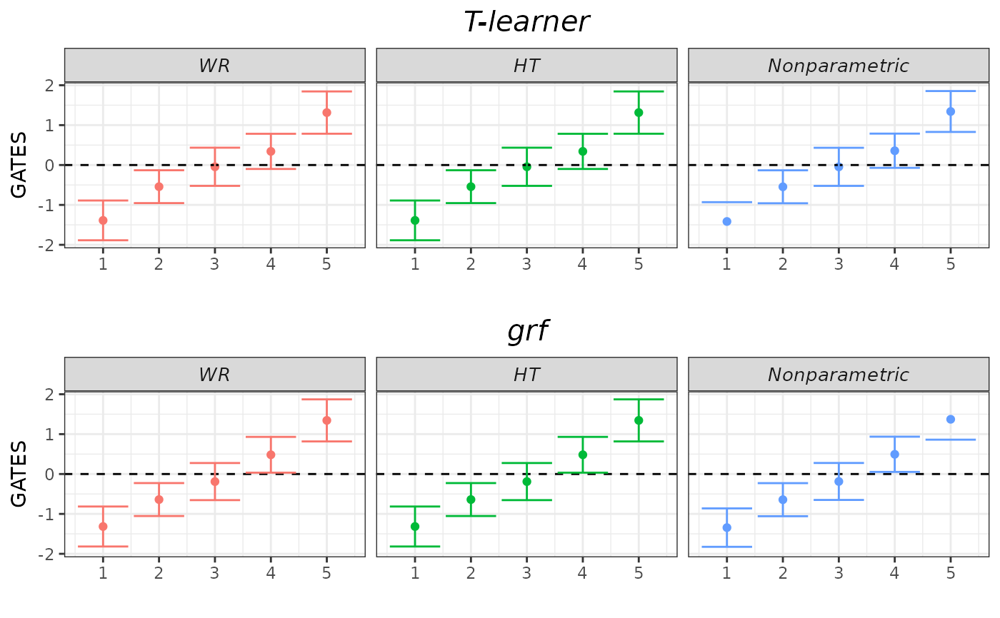
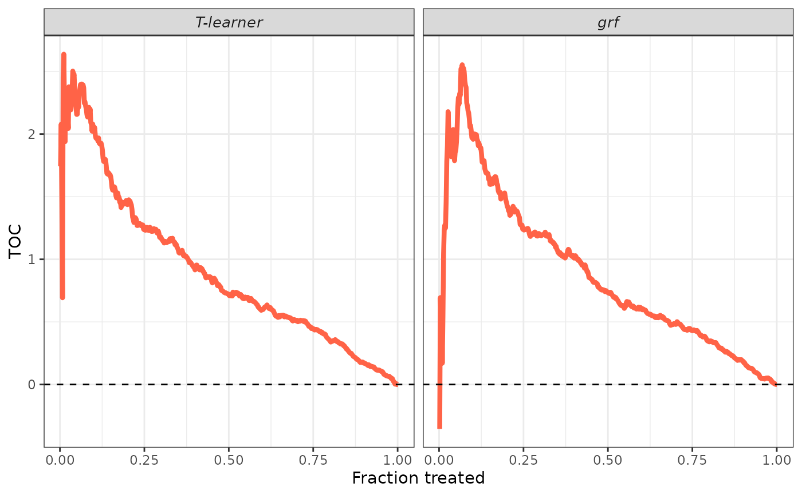

evaluCATE.RdEvaluates the quality of CATEs estimates by estimating the best linear predictor (BLP) of the actual CATEs using the estimated CATEs, the sorted group average treatment effects (GATES), and the rank-weighted average treatment effect (RATE) induced by the estimated CATEs.
Observed outcomes for the training sample.
Observed outcomes for the validation sample.
Treatment indicator for the training sample.
Treatment indicator for the validation sample.
Covariate matrix for the training sample (no intercept).
Covariate matrix for the validation sample (no intercept).
CATE predictions on the validation sample. Must be produced by a model estimated using only the training sample.
Character vector controlling the identification strategies to implement for BLP and GATES. Admitted values are "WR" (weighted residuals), "HT" (Horwitz-Thompson), and "AIPW" (augmented inverse-probability weighting).
Character vector controlling if and which additional covariates to include in the regressions to reduce the variance of the estimation. Admitted values are "none", "cddf1", "cddf2", "mck1", "mck2", and "mck3".
Propensity score predictions on the validation sample. Must be produced by a model estimated using only the training sample (unless the propensity score is known, in which case we provide the true values).
Conditional mean predictions on the validation sample. Must be produced by a model estimated using only the training sample.
Control units' conditional mean predictions on the validation sample. Must be produced by a model estimated using only the training sample.
Treated units' conditional mean predictions on the validation sample. Must be produced by a model estimated using only the training sample.
Number of groups to be formed for the GATES analysis.
Logical, whether the treatment is beneficial to units. If TRUE, units are ranked according to decreasing values of cates_val to estimate the RATEs, otherwise they are ranked according to increasing values of cates_val.
Number of bootstrap replications to estimate the standard error of the RATE estimates.
Logical, set to FALSE to prevent the function from printing the progresses.
An evaluCATE object.
To estimate BLP, GATES, and RATEs, the user must provide observations on the outcomes, the treatment status, and the covariates of units in the training and validation samples separately.
Additionally, the user must provide CATE predictions on the validation sample obtained from a model estimated using only the training sample.
evaluCATE implements a number of strategies to estimate the BLP and the GATES. Most of them involve fitting a suitable linear model. The linear models differ according to the
different identification strategies. Furthermore, for each strategy, there exist various sets of constructed covariates that one can add to reduce the variance of the estimation. evaluCATE
fits and returns all these possible models. GATES are also estimated using a nonparametric approach. Check the online
short tutorial for details.
For the linear models, standard errors are estimated using the Eicker-Huber-White estimator. These standard errors are then used to test three distinct hypotheses of effect heterogeneity: whether
all GATES are equal to each other, whether the largest and the smallest GATES are different from each other, and whether the differences in the GATES across all pairs of groups are zero.
For the last test, we adjust p-values to account for multiple hypotheses testing using Holm's procedure and report the median of the adjusted p-values. The nonparametric approach tests only the first
of these hypotheses. Check the hypotheses testing vignette for details.
Some of the linear models involve covariates that depend on particular nuisance functions, e.g., propensity score and conditional mean of the outcome
(check the online denoising vignette for details about these covariates). The user can supply estimates of these functions by using the
optional arguments pscore, mu, mu0, and mu1. Be careful, as these must be obtained using only the training sample. If not provided by the user, these functions are estimated internally
via honest regression_forests using only the training sample.
To estimate the BLP and GATES using the AIPW strategy, doubly-robust scores are estimated internally using the validation sample via 5-fold cross fitting and honest regression forests (see the
dr_scores function for details). The same doubly-robust scores are also used to estimate the RATEs.
Groups are constructed by cutting the distribution of cates into n_groups quantiles. If this leads to one or more groups composed of only treated or only control units, the function raises an error.
Two different RATEs are estimated: AUTOC and QINI coefficient. Sample-averaging estimators are employed. Standard errors are estimated by the standard deviation of the bootstrap estimates obtained using the half-sample bootstrap.
Other functions
## Generate data.
set.seed(1986)
n <- 1000
k <- 2
X <- matrix(rnorm(n * k), ncol = k)
colnames(X) <- paste0("x", seq_len(k))
D <- rbinom(n, size = 1, prob = 0.5)
mu0 <- 0.5 * X[, 1]
mu1 <- 0.5 * X[, 1] + X[, 2]
Y <- mu0 + D * (mu1 - mu0) + rnorm(n)
## Sample split.
train_idx <- sample(c(TRUE, FALSE), length(Y), replace = TRUE)
X_tr <- X[train_idx, ]
X_val <- X[!train_idx, ]
D_tr <- D[train_idx]
D_val <- D[!train_idx]
Y_tr <- Y[train_idx]
Y_val <- Y[!train_idx]
## CATEs estimation.
library(grf)
forest <- causal_forest(X_tr, Y_tr, D_tr) # We use only the training sample.
cates_val <- predict(forest, X_val)$predictions # We predict on the validation sample.
## CATEs evaluation. Estimate all nuisances internally. Do not use denoising.
strategies <- c("WR", "HT", "AIPW")
denoising <- "none"
pscore_val <- rep(0.5, length(Y_val))
evaluation <- evaluCATE(Y_tr, Y_val, D_tr, D_val, X_tr, X_val, cates_val,
strategies = strategies, denoising = denoising, pscore_val = pscore_val)
#> Estimating nuisance functions;
#> Estimating AIPW scores;
#> BLP estimation;
#> GATES estimation;
#> RATE estimation;
#> Output.
#>
## Generic S3 methods.
summary(evaluation, target = "BLP")
#> BLP and RATEs results
#>
#> Estimated ATE + 95% confidence intervals:
#>
#> Estimated HET + 95% confidence intervals:
#>
#> RATEs results + 95% confidence intervals:
#> AUTOC: 0.86[ 0.684, 1.042]
#> QINI: 0.27[ 0.218, 0.329]
summary(evaluation, target = "BLP", latex = TRUE)
#> \begingroup
#> \setlength{\tabcolsep}{8pt}
#> \renewcommand{\arraystretch}{1.1}
#> \begin{table}[H]
#> \centering
#> \begin{adjustbox}{width = 1\textwidth}
#> \begin{tabular}{@{\extracolsep{5pt}}l c c c}
#> \\[-1.8ex]\hline
#> \hline \\[-1.8ex]
#> & ATE ($\beta_1$) & HET ($\beta_2$) \\
#> \addlinespace[2pt]
#> \hline \\[-1.8ex]
#>
#>
#> \addlinespace[3pt]
#> \\[-1.8ex]\hline
#> \hline \\[-1.8ex]
#> \end{tabular}
#> \end{adjustbox}
#> \caption{BLP results. $95\%$ confidence intervals are displayed in brackets under each point estimate.}
#> \label{table_blp_results}
#> \end{table}
#> \endgroup
summary(evaluation, target = "GATES")
#> GATES results
#>
#> Estimated GATES + 95% confidence intervals:
#>
#> Hypotheses testing results (p-values):
summary(evaluation, target = "GATES", latex = TRUE)
#> \begingroup
#> \setlength{\tabcolsep}{8pt}
#> \renewcommand{\arraystretch}{1.1}
#> \begin{table}[H]
#> \centering
#> \begin{adjustbox}{width = 1\textwidth}
#> \begin{tabular}{@{\extracolsep{5pt}}l c c c c c}
#> \\[-1.8ex]\hline
#> \hline \\[-1.8ex]
#> & \textit{Group 1} & \textit{Group 2} & \textit{Group 3} & \textit{Group 4} & \textit{Group 5} \\
#> \addlinespace[2pt]
#> \hline \\[-1.8ex]
#>
#> wr\_none & -1.44 & -0.48 & -0.27 & 0.52 & 1.35\\
#> & [-1.928, -0.952] & [-0.915, -0.045] & [-0.713, 0.173] & [ 0.067, 0.973] & [ 0.825, 1.875] \\
#> ht\_none & -1.44 & -0.48 & -0.27 & 0.52 & 1.35\\
#> & [-1.928, -0.952] & [-0.915, -0.045] & [-0.713, 0.173] & [ 0.067, 0.973] & [ 0.825, 1.875] \\
#> aipw & -1.50 & -0.38 & -0.34 & 0.55 & 1.41\\
#> & [-1.898, -1.102] & [-0.815, 0.055] & [-0.775, 0.095] & [ 0.146, 0.954] & [ 1.006, 1.814] \\
#> imai\_li & -1.47 & -0.49 & -0.26 & 0.53 & 1.38\\
#> & [-1.944, -0.996] & [-0.927, -0.053] & [-0.701, 0.181] & [ 0.083, 0.977] & [ 0.872, 1.888] \\
#>
#> \addlinespace[3pt]
#> \\[-1.8ex]\hline
#> \hline \\[-1.8ex]
#> \end{tabular}
#> \end{adjustbox}
#> \caption{GATES results. $95\%$ confidence intervals are displayed in brackets under each point estimate.}
#> \label{table_blp_results}
#> \end{table}
#> \endgroup
plot(evaluation, target = "GATES")

plot(evaluation, target = "TOC")
